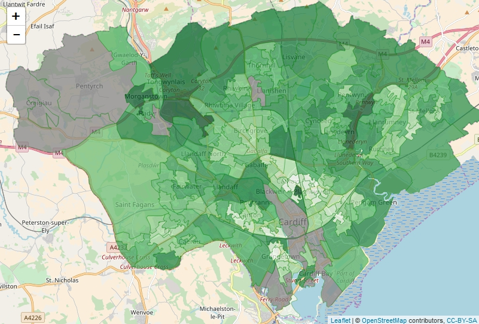
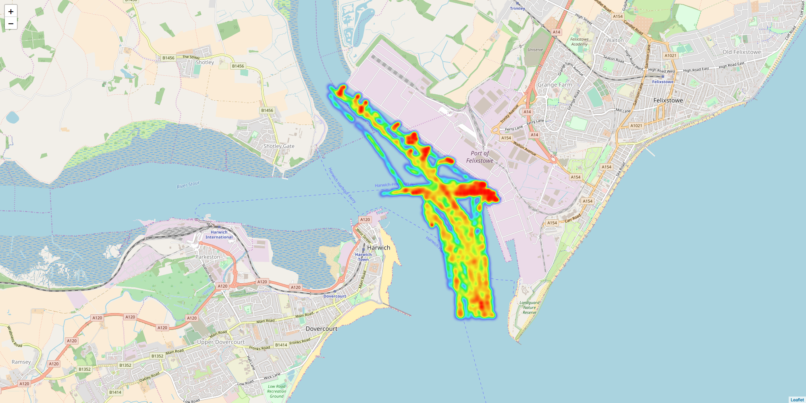

Gareth Clews, Data Scientist
The outcomes can be:
Mapping the density of vegetation detected in street level imagery
Using VAT data as an indicator of GDP growth
Understanding ship behaviour in port
Welsh presence on Twitter
Cargo manifest contents
Classification of the financial sector
Uses neural networks to map companies to SIC classes
Internet traffic
Get in touch if you want to